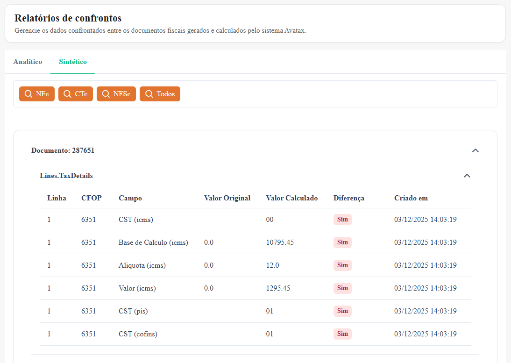

Integrador
Manual do usuário |
Relatórios de confrontos sintético

Relatórios de Confrontos – Sintético
A tela Relatórios de Confrontos – Sintético apresenta uma visão resumida e organizada das divergências encontradas entre os documentos fiscais recuperados (NFe, NFSe e CTe) e os valores calculados pelo sistema Avatax (Avalara).
Diferentemente da visão Analítica, esta tela tem como foco facilitar a leitura e o entendimento das divergências, agrupando as informações por documento e por grupo de dados.
Abas da tela
- Analítico
Apresenta o detalhamento campo a campo das divergências. - Sintético
Exibe um resumo estruturado das divergências, organizado por documento fiscal e grupo de informações.
Filtros por tipo de documento
Na parte superior da tela, o usuário pode filtrar os confrontos por tipo de documento:
- NFe – Notas Fiscais Eletrônicas
- CTe – Conhecimentos de Transporte Eletrônicos
- NFSe – Notas Fiscais de Serviços Eletrônicas
- Todos – Exibe confrontos de todos os tipos de documentos
Esses filtros permitem uma navegação rápida e objetiva entre os documentos analisados.
Organização por documento
Os dados são apresentados em blocos expansíveis, cada um representando um documento fiscal específico.
Informações do cabeçalho do bloco
- Documento
Identifica o número do documento fiscal confrontado. - Grupo de informações
Indica o agrupamento técnico dos dados, como: - Lines.TaxDetails – Detalhes de impostos por item
- Outros grupos conforme o tipo de documento
- Expansão / Recolhimento
Permite abrir ou fechar os detalhes do documento, facilitando a navegação em listas extensas.
Estrutura da tabela de divergências
Dentro de cada documento, as divergências são exibidas em formato de tabela, com as seguintes colunas:
- Linha
Identifica a linha ou item do documento fiscal ao qual a divergência se refere. - CFOP
Código Fiscal de Operações e Prestações relacionado ao item. - Campo
Nome do campo fiscal que apresentou divergência, como: - CST (ICMS, PIS, COFINS)
- Base de Cálculo
- Alíquota
- Valor do imposto
- Valor Original
Valor extraído diretamente do documento fiscal original. - Valor Calculado
Valor calculado e retornado pelo sistema Avatax. - Diferença
Indicação visual se há divergência entre o valor original e o valor calculado. - Criado em
Data e hora em que o confronto foi registrado no sistema.
Indicação de divergências
- A coluna Diferença destaca visualmente os campos que apresentam inconsistências.
- O uso de indicadores facilita a rápida identificação de pontos que exigem análise ou correção.
Objetivo da visão Sintética
- Oferecer uma visão consolidada das divergências por documento
- Facilitar a análise fiscal sem a necessidade de detalhamento técnico excessivo
- Ajudar na priorização de documentos com inconsistências
- Melhorar a experiência do usuário em análises recorrentes
Benefícios da abordagem sintética
- Navegação mais fluida
- Menor volume de informações simultâneas
- Organização clara por documento
- Facilidade de auditoria e revisão


Created with the Personal Edition of HelpNDoc: Eliminate the Struggles of Documentation with a Help Authoring Tool